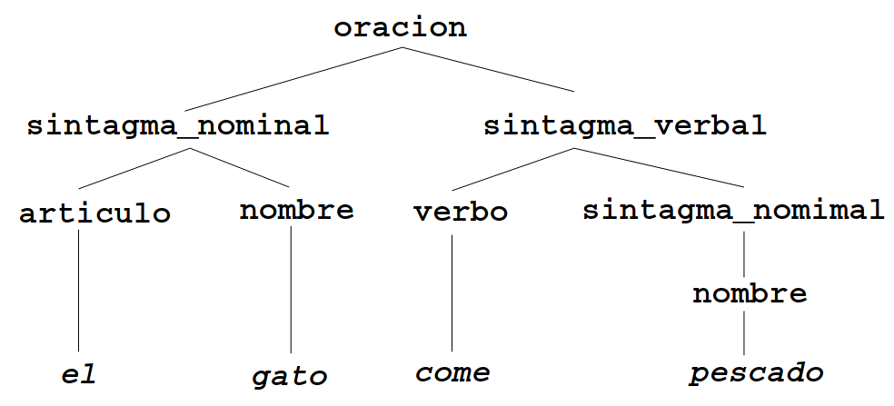

Tema 15: Procesamiento de lenguaje natural
Índice
- 1. Gramáticas libres de contexto
- 2. Gramáticas libres de contexto en Prolog
- 3. Gramáticas de cláusulas definidas (GCD)
- 3.1. Definición del ejemplo con GCD
- 3.2. Reglas recursivas en GCD
- 3.3. GCD para un lenguaje formal
- 3.4. Árbol de análisis con GCD
- 3.5. Concordancia de género en GCD
- 3.6. Concordancia de número en GCD
- 3.7. Ejemplo de una GCD que no es libre de contexto
- 3.8. GCD con llamadas a Prolog
- 3.9. Separación de reglas y lexicón
- 3.10. Separación de reglas y lexicón con concordancia de número
- 3.11. Lexicón con género y número
- 4. Bibliografía
1. Gramáticas libres de contexto
1.1. Ejemplo de gramática libres de contexto
- Ejemplos de frases:
El gato come pescadoEl perro come carne
Ejemplo de gramática libre de contexto (GLC)
oración --> sintagma_nominal, sintagma_verbal sintagma_nominal --> nombre sintagma_nominal --> artículo, nombre sintagma_verbal --> verbo, sintagma_nominal artículo --> [el] nombre --> [gato] nombre --> [perro] nombre --> [pescado] nombre --> [carne] verbo --> [come]
1.2. Árbol de análisis
- El árbol de análisis de la gramática anterior es

1.3. Definiciones de Gramáticas libres de contexto
- Concepto de gramática: G = (N,T,P,S)
- N: vocabulario no terminal (categorías sintácticas)
- T: vocabulario terminal
- P: reglas de producción
- S: símbolo inicial
- Vocabulario: \(V = N \cup T\) es el vocabulario con \(N \cap T = \emptyset\)
- Derivaciones:
- \(xAy \Longrightarrow xwy\) mediante \(A \Longrightarrow w\)
- \(x \stackrel{*}{\Longrightarrow} y\) si existen \(x_1, x_2, \dots, x_n\) tales que \(x = x_1 \Longrightarrow x_2 \cdots \Longrightarrow x_{n-1} \Longrightarrow x_n = y\)
- Lenguaje definido por una gramática: \(L(G) = \{ x \in T^*: S \stackrel{*}{\Longrightarrow} x\}\)
- Una gramática es libre de contextos (GLC) si sus reglas son de la forma \(A \Longrightarrow w\) con \(A \in N\) y \(w \in V^*\)
2. Gramáticas libres de contexto en Prolog
2.1. Reconocedor de GLC mediante append
Representación de oraciones en Prolog
[el, gato, come, pescado] [el, perro, come, carne]
oración(O)se verifica si O es una oración de la gramática anterior. Por ejemplo,?- oración([el,gato,come,pescado]). true ?- oración([el,come,pescado]). false. ?- oración([el,perro,come,carne]). true ?- oración([el,perro,come,pienso]). false.
Su definición es
oración(O) :- sintagma_nominal(SN), sintagma_verbal(SV), append(SN,SV,O). sintagma_nominal(SN) :- nombre(SN). sintagma_nominal(SN) :- artículo(A), nombre(N), append(A,N,SN). sintagma_verbal(SV) :- verbo(V), sintagma_nominal(SN), append(V,SN,SV). artículo([el]). nombre([gato]). nombre([perro]). nombre([pescado]). nombre([carne]). verbo([come]).
- Otros usos de la gramática
Generación de las oraciones
?- oración(O). O = [gato,come,gato] ; O = [gato,come,perro] ?- findall(_O,oración(_O),_L),length(_L,N). N = 64.
Reconocimiento de las categorías gramaticales
?- sintagma_nominal([el,gato]). true ?- sintagma_nominal([un,gato]). false.
Generación de las categorias gramaticales
?- findall(_SN,sintagma_nominal(_SN),L). L = [[gato],[perro],[pescado],[carne], [el,gato],[el,perro],[el,pescado],[el,carne]].
- El código del programa anterior se encuentra en GLC_append.pl.
2.2. Listas de diferencias
Representaciones de
[a,b,c]como listas de diferencias:[a,b,c,d] - [d] [a,b,c,1,2,3] - [1,2,3] [a,b,c|X] - X [a,b,c] - []
- Concatenación de listas de diferencias:
Programa:
conc_ld(A-B,B-C,A-C).
Ejemplos:
?- conc_ld([a,b|RX]-RX,[c,d|RY]-RY,Z-[]). RX = [c,d], RY = [], Z = [a,b,c,d]. ?- conc_ld([a,b|_RX]-_RX,[c,d|_RY]-_RY,Z-[]). Z = [a,b,c,d].
2.3. Reconocedor de GLC mediante listas de diferencia
Representación de oraciones como listas de diferencia
[el, gato, come, pescado]-[] [el, perro, come, carne]-[]
oración(O-[])se verifica si O es una oración de la gramática anterior. Por ejemplo,?- oración([el,gato,come,pescado]-[]). true ?- oración([el,come,pescado]-[]). false. ?- oración([el,perro,come,carne]-[]). true ?- oración([el,perro,come,pienso]-[]). false.
Su definición es
oración(A-B) :- sintagma_nominal(A-C), sintagma_verbal(C-B). sintagma_nominal(A-B) :- nombre(A-B). sintagma_nominal(A-B) :- artículo(A-C), nombre(C-B). sintagma_verbal(A-B) :- verbo(A-C), sintagma_nominal(C-B). artículo([el|A]-A). nombre([gato|A]-A). nombre([perro|A]-A). nombre([pescado|A]-A). nombre([carne|A]-A). verbo([come|A]-A).
- Otros usos de la gramática
Generación de las oraciones
?- oración(O-[]). O = [gato,come,gato] ; O = [gato,come,perro] ?- findall(_O,oración(_O-[]),_L),length(_L,N). N = 64.
Reconocimiento de las categorías gramaticales
?- sintagma_nominal([el,gato]-[]). true ?- sintagma_nominal([un,gato]-[]). false.
Generación de las categorias gramaticales
?- findall(_SN,sintagma_nominal(_SN-[]),L). L = [[gato],[perro],[pescado],[carne], [el,gato],[el,perro],[el,pescado],[el,carne]].
- El código del programa anterior se encuentra en GLC_lista_diferencia.pl.
Comparación de eficiencia.
?- load_files('GLC_append', [silent(true)]). true. ?- time(oración([el,gato,come,pescado])). % 23,002 inferences, 0.004 CPU in 0.004 seconds (100% CPU, 5194519 Lips) true ?- load_files('GLC_lista_diferencia', [silent(true)]). true. ?- time(oración([el,gato,come,pescado]-[])). % 7 inferences, 0.000 CPU in 0.000 seconds (89% CPU, 143569 Lips) true
3. Gramáticas de cláusulas definidas (GCD)
3.1. Definición del ejemplo con GCD
Definición de la GCD correspondiente al ejemplo.
oración --> sintagma_nominal, sintagma_verbal. sintagma_nominal --> nombre. sintagma_nominal --> artículo, nombre. sintagma_verbal --> verbo, sintagma_nominal. artículo --> [el]. nombre --> [gato]. nombre --> [perro]. nombre --> [pescado]. nombre --> [carne]. verbo --> [come].
Programa correspondiente a la GCD
?- listing([oración,sintagma_nominal,sintagma_verbal,artículo,nombre,verbo]). oración(A, B) :- sintagma_nominal(A, C), sintagma_verbal(C, B). sintagma_nominal(A, B) :- nombre(A, B). sintagma_nominal(A, B) :- artículo(A, C), nombre(C, B). sintagma_verbal(A, B) :- verbo(A, C), sintagma_nominal(C, B). artículo([el|A], A). nombre([gato|A], A). nombre([perro|A], A). nombre([pescado|A], A). nombre([carne|A], A). verbo([come|A], A). true.
- Usos de la GCD:
Reconocimiento de oraciones
?- oración([el,gato,come,pescado],[]). true ?- oración([el,come,pescado],[]). false.
Completación de oraciones
?- oración([el,gato,X,pescado],[]). X = come ; false. ?- oración([X,gato,Y,pescado],[]). X = el, Y = come ; false.
Generación de categorías gramaticales
?- sintagma_nominal(L,[]). L = [gato] ; L = [perro]
phrase(C,L)se verifica siL-[]pertenece a la categoría gramaticalC. Por ejemplo,?- phrase(oración,[el,gato,come,pescado]). true ?- phrase(oración,[el,come,pescado]). false. ?- phrase(oración,[el,gato,X,pescado]). X = come ; false. ?- phrase(oración,[X,gato,Y,pescado]). X = el, Y = come ; false. ?- phrase(sintagma_nominal,L). L = [gato] ; L = [perro]
La eficiencia es la misma que con lista de diferencia
?- time(oración([el,gato,come,pescado],[])). % 8 inferences, 0.000 CPU in 0.000 seconds (90% CPU, 1336675 Lips) true
- El programa anterior se encuentra en GCD.pl.
3.2. Reglas recursivas en GCD
- Nota: El objetivo es extender el ejemplo de GCD para aceptar oraciones
como
[el,gato,come,pescado,o,el,perro,come,pescado]
3.2.1. Primera propuesta
La primera propuesta de gramática es
oración --> oración, conjunción, oración. oración --> sintagma_nominal, sintagma_verbal. sintagma_nominal --> nombre. sintagma_nominal --> artículo, nombre. sintagma_verbal --> verbo, sintagma_nominal. artículo --> [el]. nombre --> [gato]. nombre --> [perro]. nombre --> [pescado]. nombre --> [carne]. verbo --> [come]. conjunción --> [y]. conjunción --> [o].
Fallo en el reconocimiento de oraciones
?- oración([el,gato,come,pescado,o, el,perro,come,pescado],[]). ERROR: Out of local stack
Programa correspondiente a oración
?- listing(oración). oración(A, B) :- oración(A, C), conjunción(C, D), oración(D, B). oración(A, B) :- sintagma_nominal(A, C), sintagma_verbal(C, B). true.
- El código correspondiente a esta sección se encuentra en GCD_recursiva_1.pl.
3.2.2. Segunda propuesta
La segunda propuesta es
oración --> sintagma_nominal, sintagma_verbal. oración --> oración, conjunción, oración. sintagma_nominal --> nombre. sintagma_nominal --> artículo, nombre. sintagma_verbal --> verbo, sintagma_nominal. artículo --> [el]. nombre --> [gato]. nombre --> [perro]. nombre --> [pescado]. nombre --> [carne]. verbo --> [come]. conjunción --> [y]. conjunción --> [o].
Reconocimiento de oraciones
?- oración([el,gato,come,pescado,o,el,perro,come,pescado],[]). true ?- oración([un,gato,come],[]). ERROR: Stack limit (1.0Gb) exceeded
- El código correspondiente a esta sección se encuentra en GCD_recursiva_2.pl.
3.2.3. Tercera propuesta
La tercera propuesta es
oración --> oración_simple. oración --> oración_simple, conjunción, oración. oración_simple --> sintagma_nominal, sintagma_verbal. sintagma_nominal --> nombre. sintagma_nominal --> artículo, nombre. sintagma_verbal --> verbo, sintagma_nominal. artículo --> [el]. nombre --> [gato]. nombre --> [perro]. nombre --> [pescado]. nombre --> [carne]. verbo --> [come]. conjunción --> [y]. conjunción --> [o].
Reconocimiento de oraciones
?- oración([el,gato,come,pescado,o,el,perro,come,pescado],[]). true ?- oración([un,gato,come],[]). false.
- El código correspondiente a esta sección se encuentra en GCD_recursiva_3.pl.
3.3. GCD para un lenguaje formal
La siguiente gramática reconoce el lenguaje formal \(\{ a^nb^n : n \in {\Bbb N}\}\). Por ejemplo,
?- s([a,a,b,b],[]). Yes ?- s([a,a,b,b,b],[]). No ?- s(X,[]). X = [] ; X = [a, b] ; X = [a, a, b, b] Yes
La gramática es
s --> []. s --> i,s,d. i --> [a]. d --> [b].
- El código de la gramática anterior se encuentra en GCD_anbn.pl.
3.4. Árbol de análisis con GCD
oración(A,L,[])4 se verifica si ~Aes el árbol de análisis sintáctico de la oraciónL. Por ejemplo,?- oración(A,[el,gato,come,pescado],[]). A = o(sn(art(el),n(gato)),sv(v(come),sn(n(pescado)))) ?- phrase(oración(A),[el,gato,come,pescado]). A = o(sn(art(el),n(gato)),sv(v(come),sn(n(pescado))))
La especificación de la gramática es
oración(o(SN,SV)) --> sintagma_nominal(SN), sintagma_verbal(SV). sintagma_nominal(sn(N)) --> nombre(N). sintagma_nominal(sn(Art,N)) --> artículo(Art), nombre(N). sintagma_verbal(sv(V,SN)) --> verbo(V), sintagma_nominal(SN). artículo(art(el)) --> [el]. nombre(n(gato)) --> [gato]. nombre(n(perro)) --> [perro]. nombre(n(pescado)) --> [pescado]. nombre(n(carne)) --> [carne]. verbo(v(come)) --> [come].
El programa correspondiente a la gramática es
?- listing([oración,sintagma_nominal,nombre]). oración(o(A,B),C,D) :- sintagma_nominal(A,C,E), sintagma_verbal(B,E,D). sintagma_nominal(sn(A),B,C) :- nombre(A,B,C). sintagma_nominal(sn(A,B),C,D) :- artículo(A,C,E), nombre(B,E,D). nombre(n(gato),[gato|A],A). nombre(n(perro),[perro|A],A). nombre(n(pescado),[pescado|A],A). nombre(n(carne),[carne|A],A).
- El código se encuentra en GCD_analisis.pl.
3.5. Concordancia de género en GCD
phrase(oración,L)se verifica siLes una oración de la gramática con concordancia de género. Por ejemplo,?- phrase(oración,[el,gato,come,pescado]). true ?- phrase(oración,[la,gato,come,pescado]). false. ?- phrase(oración,[la,gata,come,pescado]). true
La especificación es
oración --> sintagma_nominal, sintagma_verbal. sintagma_nominal --> nombre(_). sintagma_nominal --> artículo(G), nombre(G). sintagma_verbal --> verbo, sintagma_nominal. artículo(masculino) --> [el]. artículo(femenino) --> [la]. nombre(masculino) --> [gato]. nombre(femenino) --> [gata]. nombre(masculino) --> [pescado]. verbo --> [come].
El programa correspondiente es
?- listing([oración,sintagma_nominal,sintagma_verbal,artículo,nombre,verbo]). oración(A, B) :- sintagma_nominal(A, C), sintagma_verbal(C, B). sintagma_nominal(A, B) :- nombre(_, A, B). sintagma_nominal(A, B) :- artículo(G, A, C), nombre(G, C, B). sintagma_verbal(A, B) :- verbo(A, C), sintagma_nominal(C, B). artículo(masculino, [el|A], A). artículo(femenino, [la|A], A). nombre(masculino, [gato|A], A). nombre(femenino, [gata|A], A). nombre(masculino, [pescado|A], A). verbo([come|A], A). true.
- El código se encuentra en GCD_genero.pl.
3.6. Concordancia de número en GCD
phrase(oración,L)se verifica siLes una oración de la gramática con concordancia en número. Por ejemplo,?- phrase(oración,[el,gato,come,pescado]). true ?- phrase(oración,[los,gato,come,pescado]). false. ?- phrase(oración,[los,gatos,comen,pescado]). true
La especificación es
oración --> sintagma_nominal(N), sintagma_verbal(N). sintagma_nominal(N) --> nombre(N). sintagma_nominal(N) --> artículo(N), nombre(N). sintagma_verbal(N) --> verbo(N), sintagma_nominal(_). artículo(singular) --> [el]. artículo(plural) --> [los]. nombre(singular) --> [gato]. nombre(plural) --> [gatos]. nombre(singular) --> [perro]. nombre(plural) --> [perros]. nombre(singular) --> [pescado]. nombre(singular) --> [carne]. verbo(singular) --> [come]. verbo(plural) --> [comen].
- El código se encuentra en GCD_numero.pl.
3.7. Ejemplo de una GCD que no es libre de contexto
phrase(s,L)se verifica siLes una palabra del lenguaje \(\{ a^nb^nc^n : n \in {\Bbb N}\}\). Por ejemplo,?- phrase(s,[a,a,b,b,c,c]). true ?- phrase(s,[a,a,b,b,b,c,c]). false. ?- phrase(s,L). L = [] ; L = [a,b,c] ; L = [a,a,b,b,c,c] ; L = [a,a,a,b,b,b,c,c,c]
La especificación es
s --> bloque_a(N), bloque_b(N), bloque_c(N). bloque_a(0) --> []. bloque_a(suc(N)) --> [a], bloque_a(N). bloque_b(0) --> []. bloque_b(suc(N)) --> [b], bloque_b(N). bloque_c(0) --> []. bloque_c(suc(N)) --> [c], bloque_c(N).
3.8. GCD con llamadas a Prolog
phrase(s,L)se verifica siLes una palabra del lenguaje \(\{a^{2n}b^{2n}c^{2n}: n \in {\Bbb N}\}\). Por ejemplo,?- phrase(s, [a, a, b, b, c, c]). true ?- phrase(s, [a, b, c]). false. ?- phrase(s, L). L = [] ; L = [a,a,b,b,c,c] ; L = [a,a,a,a,b,b,b,b,c,c,c,c]
La especificación es
s --> bloque_a(N), bloque_b(N), bloque_c(N), {par(N)}. bloque_a(0) --> []. bloque_a(s(N)) --> [a],bloque_a(N). bloque_b(0) --> []. bloque_b(s(N)) --> [b],bloque_b(N). bloque_c(0) --> []. bloque_c(s(N)) --> [c],bloque_c(N).
- El código se encuentra en GCD_a2nb2nc2n.pl.
3.9. Separación de reglas y lexicón
phrase(oración,L)se verifica siLes una oración de la siguiente gramática en la que se han separado las reglas del lexicón. Por ejemplo.?- phrase(oración,[el,gato,come,pescado]). true ?- phrase(oración,[el,come,pescado]). false. ?- phrase(oración,[el,gato,X,pescado]). X = come ; false. ?- phrase(oración,[X,gato,Y,pescado]). X = el, Y = come ; false. ?- phrase(sintagma_nominal,L). L = [gato] ; L = [perro] ; L = [pescado] ; L = [carne] ; L = [el,gato]
Las reglas son
oración --> sintagma_nominal, sintagma_verbal. sintagma_nominal --> nombre. sintagma_nominal --> artículo, nombre. sintagma_verbal --> verbo, sintagma_nominal. artículo --> [Palabra], {lex(Palabra,artículo)}. nombre --> [Palabra], {lex(Palabra,nombre)}. verbo --> [Palabra], {lex(Palabra,verbo)}.
El lexicón es
lex(el,artículo). lex(gato,nombre). lex(perro,nombre). lex(pescado,nombre). lex(carne,nombre). lex(come,verbo).
- El código se encuentra en GCD_lexicon_1.pl.
3.10. Separación de reglas y lexicón con concordancia de número
phrase(oración,L)se verifica siLes una oración de la siguiente gramática con concordancia en número en la que se han separado las reglas del lexicón. Por ejemplo.?- phrase(oración,[el,gato,come,pescado]). true ?- phrase(oración,[los,gato,come,pescado]). false. ?- phrase(oración,[los,gatos,comen,pescado]). true
Las reglas son
oración --> sintagma_nominal(N), sintagma_verbal(N). sintagma_nominal(N) --> nombre(N). sintagma_nominal(N) --> artículo(N), nombre(N). sintagma_verbal(N) --> verbo(N), sintagma_nominal(_). artículo(N) --> [Palabra], {lex(Palabra,artículo,N)}. nombre(N) --> [Palabra], {lex(Palabra,nombre,N)}. verbo(N) --> [Palabra], {lex(Palabra,verbo,N)}.
El lexicón es
lex(el,artículo,singular). lex(los,artículo,plural). lex(gato,nombre,singular). lex(gatos,nombre,plural). lex(perro,nombre,singular). lex(perros,nombre,plural). lex(pescado,nombre,singular). lex(pescados,nombre,plural). lex(carne,nombre,singular). lex(carnes,nombre,plural). lex(come,verbo,singular). lex(comen,verbo,plural).
- El código se encuentra en GCD_lexicon_con_numero.pl.
3.11. Lexicón con género y número
phrase(oración,L)se verifica siLes una oración de la siguiente gramática (con concordancia en género y número) en la que se han separado las reglas del lexicón. Por ejemplo,?- phrase(oración,[la,profesora,lee,un,libro]). true. ?- phrase(oración,[la,profesor,lee,un,libro]). false. ?- phrase(oración,[los,profesores,leen,un,libro]). true. ?- phrase(oración,[los,profesores,leen]). true ?- phrase(oración,[los,profesores,leen,libros]). true
El lexicón es
lex(el,determinante,masculino,singular). lex(los,determinante,masculino,plural). lex(la,determinante,femenino,singular). lex(las,determinante,femenino,plural). lex(un,determinante,masculino,singular). lex(una,determinante,femenino,singular). lex(unos,determinante,masculino,plural). lex(unas,determinante,femenino,plural). lex(profesor,nombre,masculino,singular). lex(profesores,nombre,masculino,plural). lex(profesora,nombre,femenino,singular). lex(profesoras,nombre,femenino,plural). lex(libro,nombre,masculino,singular). lex(libros,nombre,masculino,plural). lex(lee,verbo,singular). lex(leen,verbo,plural).
Las reglas son
oración --> sintagma_nominal(N), verbo(N), complemento. complemento --> []. complemento --> sintagma_nominal(_). sintagma_nominal(N) --> nombre(_,N). sintagma_nominal(N) --> determinante(G,N), nombre(G,N). determinante(G,N) --> [P],{lex(P,determinante,G,N)}. nombre(G,N) --> [P],{lex(P,nombre,G,N)}. verbo(N) --> [P],{lex(P,verbo,N)}.
- El código se encuentra en GCD_lexicon_concordancia.pl.
4. Bibliografía
- P. Blackburn, J. Bos y K. Striegnitz.
Learn Prolog now!.
- Cap. 7 Definite Clause Grammars.
- Cap. 8 More Definite Clause Grammars.
- I. Bratko.
Prolog programming for artificial intelligence (3 ed.)
(Addison-Wesley, 1990)
- Cap 21: "Language processing with grammar rules".
- P. Flach
Simply logical (Intelligent reasoning by example).
(John Wiley, 1994)
- Cap. 7: Reasoning with natural languaje.
- U. Nilsson y J. Maluszynski
Logic, programming and Prolog (2nd ed.)
- Cap. 10: Logic and grammars.
- Y. Shoham.
Artificial intelligence techniques in Prolog.
(Morgan Kaufmann, 1994).
- Cap. 10: Natural language.
- T. Smith.
Artificial intelligence programming in Prolog.
(Univ. of Edinburgh, 2004).
- Cap. 13: Parsing in Prolog.
- J.M. Spivey
Introduction to logic programming through Prolog.
(Prentice-Hall International, 1996).
- Cap. 10: Parsing.
- M. Triska
The power of Prolog.
- Cap. 14: Prolog DCG primer.